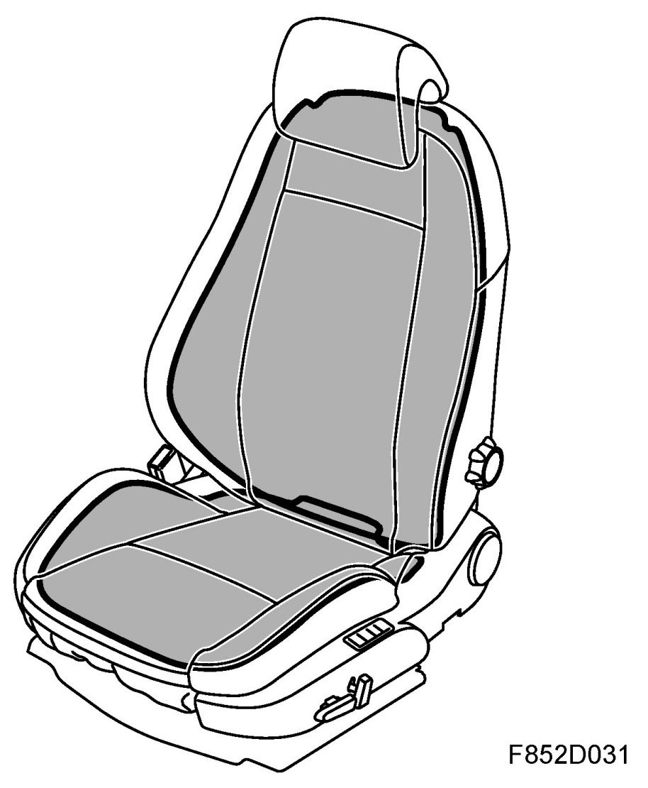
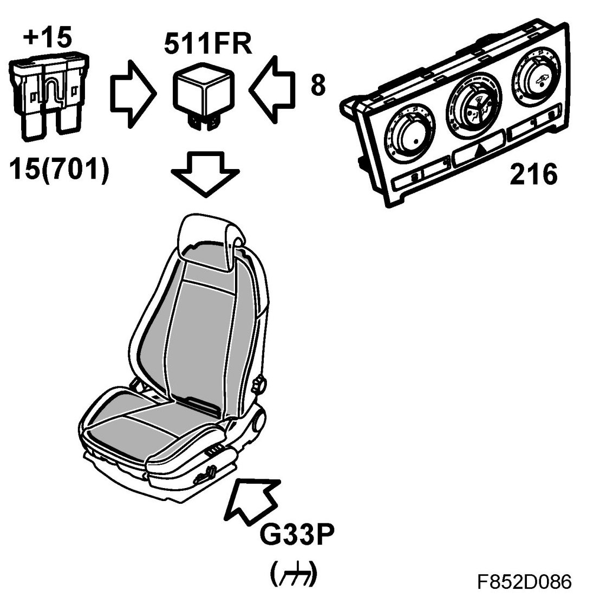
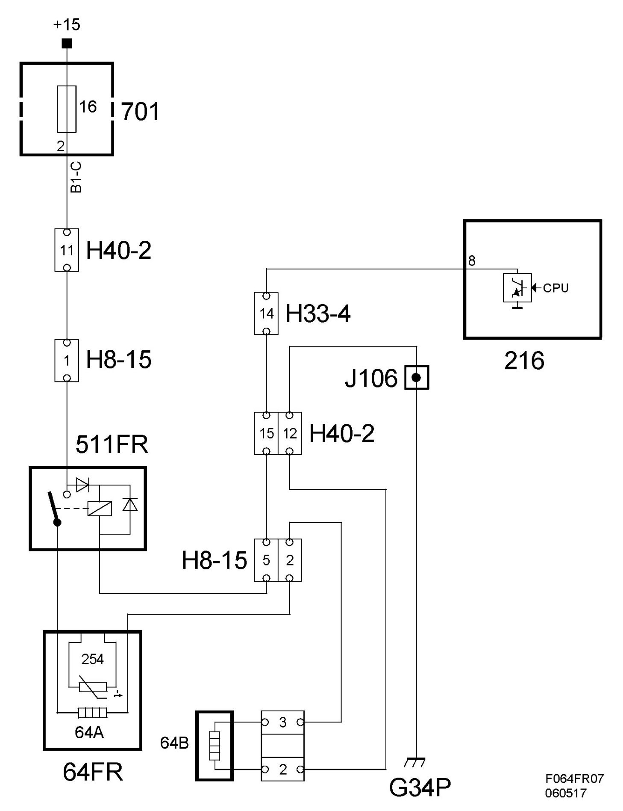
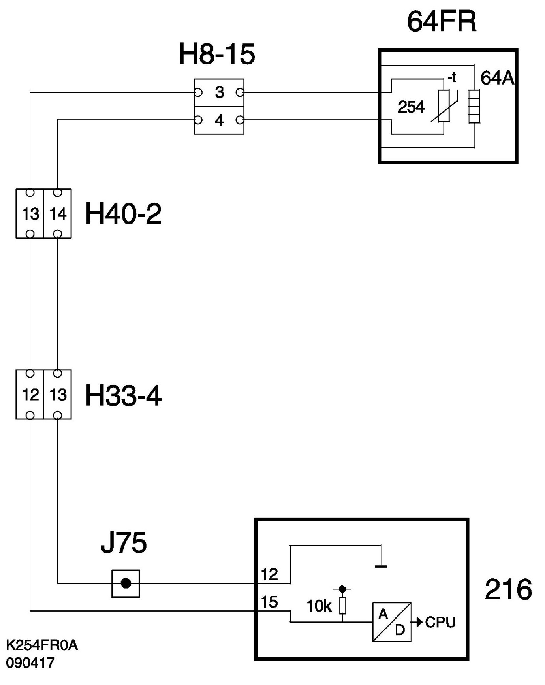

Heating Pad, Seat, Right (64FR)
Heating Pad, Seat, Right (64FR)
Location
Heating pad, seat, seat cushion (64A).
Heating pad, seat, back rest (64B).
Main task
To quickly electrically heat the seat when starting in cold temperatures.
Type
The heating pad consists of two circuits, one circuit is the heating element and the other circuit provides information about the temperature in question. The temperature sensor consists of a NTC resistor whose resistance varies with the temperature of the heating pad.

Connect
Heating element:
Relay 511R is fed +15 from fuse 15 in REC. The circuit continues through the seat and backrest cushion and is ground at grounding point G33P.
Wiring diagram, Back and seat heating pad


Wiring diagram, Heating pad temperature sensor.

The relay is connected to pin 8 (K18) on the ACC control module, when pin 8 is ground the relay pulls and the heating circuit is activated.
Temperature sensor circuit:
The sensor (254) is ground internally in the ACC unit via pin 12 (K18) and the sensor is fed 5V from pin 15 (K18) via an integrated 10 KOhm resistor in the ACC unit. The NTC resistor characteristics mean that the resistance drops as the temperature rises. This means that the voltage measured across the resistor will at the same time drop with a rising temperature.
The voltage level from the A/D sensor is converted and is then available in digital form. The digital voltage level is then converted to a temperature value which is stored in the ACC unit operating memory. Voltage levels near 0 V or 5 V are determined as circuit faults.